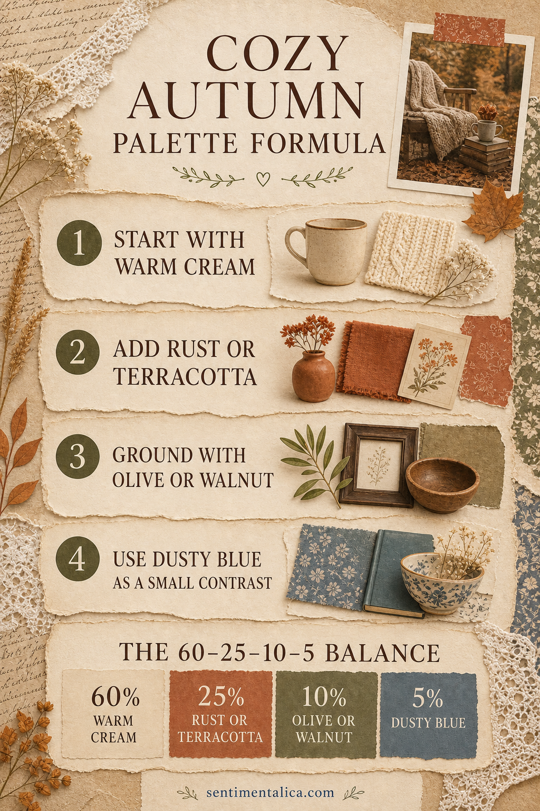
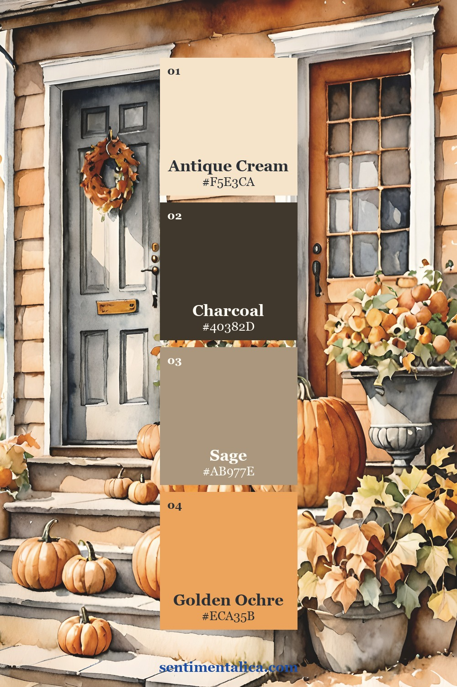
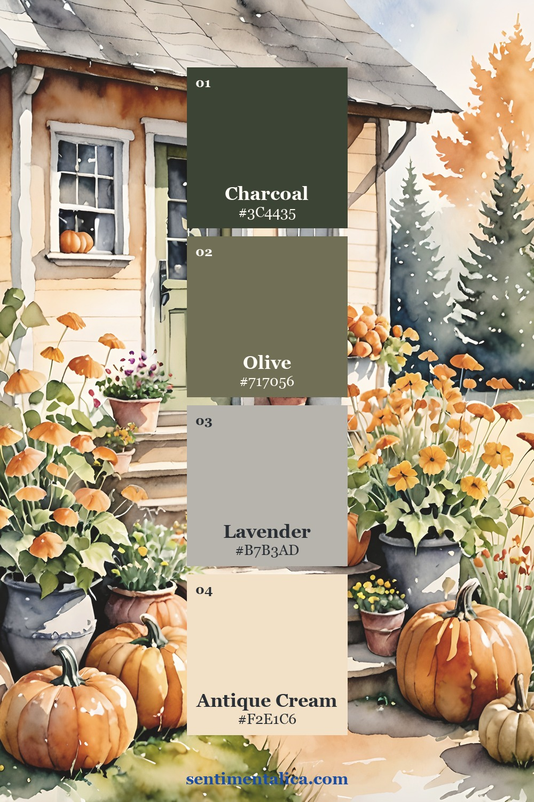
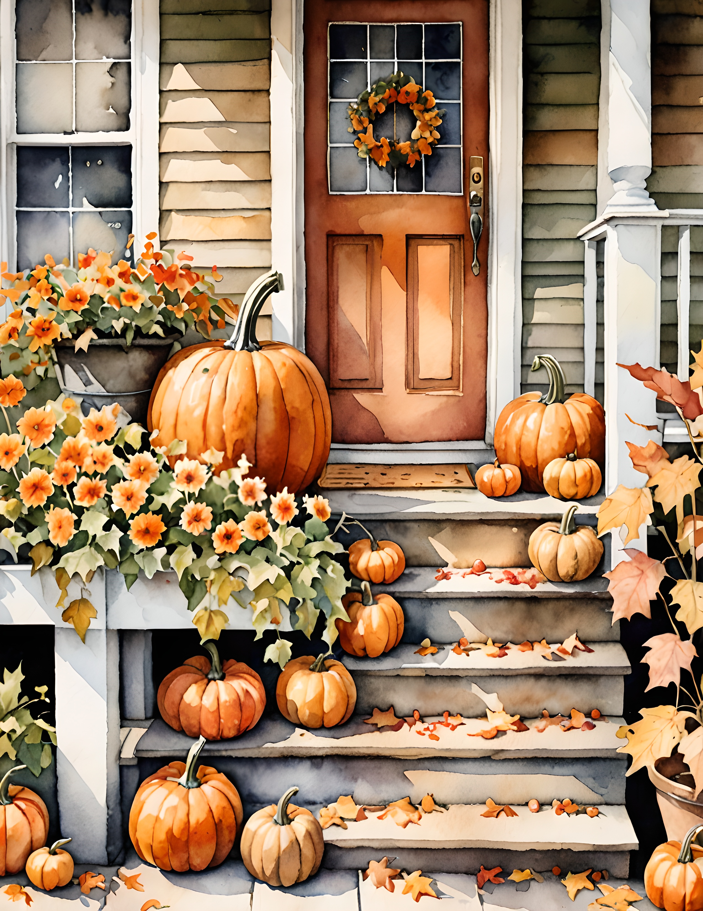

An autumn palette feels most inviting when it has more than orange and brown. The secret is balance: a generous amount of warm cream, one glowing seasonal color, a quiet natural ground and one cooler note that keeps everything from becoming heavy.

Start with a 60–25–10–5 formula
Let warm cream cover roughly 60 percent of the page. It can appear as blank writing paper, lace, book paper or a pale label. Give rust or terracotta about 25 percent, then use olive or walnut for 10 percent. Reserve the final 5 percent for dusty blue. That little contrast makes all the warm shades look richer.
The percentages are a guide, not a measuring exercise. Look at the page from arm’s length. If everything competes, add cream. If it feels flat, repeat the rust once. If the warm colors seem too sweet, add a narrow dusty-blue ticket or thread.
Three palettes pulled from real Cozy Autumn pages
Each card below uses one full-size page from the Cozy Autumn printable collection. The four swatches are sampled from that exact artwork, so they can guide cardstock, ink, ribbon and ephemera choices without guessing.



Turn the palette into a journal spread
Choose one printed page as the visual anchor. Tear or trim it so a quiet cream margin remains around it. Add a walnut-colored strip beneath the image, then repeat a small rust detail on the opposite page. Finish with only one dusty-blue accent: a label, a postage-shaped scrap or two lines of stitching.
The result should feel collected, not perfectly matched. Autumn is full of irregular edges, softened colors and surfaces that have changed with time. Let one piece be darker, one edge remain torn and one botanical overlap the border.

A useful rule when choosing supplies
Before gluing, make four small piles: light, warm, grounding and contrast. Remove anything that does not belong to one of those jobs. This prevents a lovely supply from entering the page simply because it is nearby.
The Cozy Autumn collection already carries the warm cottage atmosphere, so the supporting embellishments can stay simple. A cream label, a dark thread and one old button are often enough.